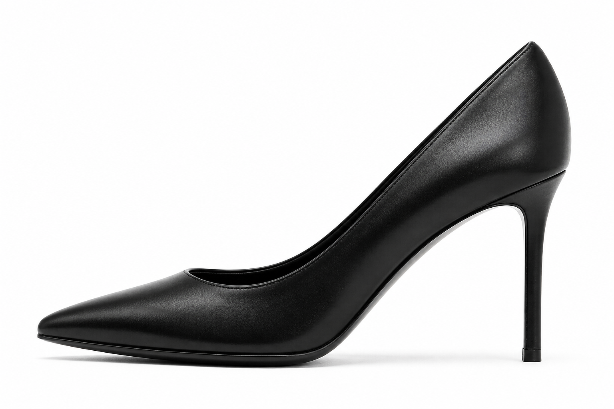

Escote asimétrico y memoria de tensión
Al prescindir de todo tipo de sujeción auxiliar, la superficie de la palaPala (Vamp)Pieza delantera que cubre el empeine y los dedos, soportando el empuje natural al caminar. soporta la totalidad del apoyo al dar el paso. En este modelo, el trazo adopta un escote levemente asimétrico que se abre hacia el lateral interno con una curva suave, acompañando el empeine sin apretar.
El juego de proporciones de la puntera afilada no responde únicamente a un dictado visual: proyecta una prolongación óptica que aligera el volumen del calzado en el plano horizontal, mientras que el cuero vacuno tratado al cromo mantiene la memoria de tensión sin ceder en los flancos laterales.
El salón So Kate prolonga el escote hacia el nacimiento de los dedos para elongar visualmente el empeine. Este rasgo constructivo traslada el esfuerzo de retención hacia los laterales de la pala.
